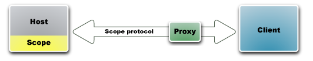
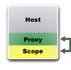
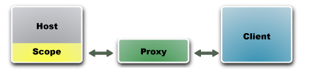

Opera Dragonfly Architecture
Introduction
This article covers the architecture of Opera Dragonfly in detail, showing what the different components in the architecture are, and how they interact during Dragonfly's running.
Architecture overview
The architecture of Opera Dragonfly, Opera Software’s development tools, is designed to allow debugging on a desktop computer, as well as on other devices such as mobile phones.
A Scope module exposes information about the runtimes, i.e. the web pages and applications in the debugged Opera instance. This instance acts as the debugging host and serves this information to clients. The format of the data sent back and forth is defined by a Scope protocol.
To overcome potential firewall issues, a proxy mediates the communication between the browser and the debugger. An example is debugging an application or web page on a mobile phone, using a normal desktop computer.
The client, i.e. the debugger application visualizes the information and allows the user to manipulate the runtimes.
The host and client, may run on the same or different devices, and the proxy may run inside either instance or on a separate server.

Debugging scenarios
There are two primary ways of doing debugging:
- Integrated: The scope, proxy and debugger run in the same Opera instance.
- Remote: The scope and debugger run on two different instances of Opera, for example on two different devices. The proxy may run on one of them, or on a separate computer.
Integrated
This is the typical scenario. The developer is working on a web application and runs it in the normal Opera browser. The debugger is running in the same instance and is shown in a separate window or in a panel integrated in the browser window.

In this case, the debugging host, proxy and client are all running inside the same browser instance. The proxy runs on a random port chosen by Opera, and the Scope module and debugger are automatically connected to it.
Remote
An example for this scenario is debugging a web page or application on a mobile phone. The phone has limited screen space and may be cumbersome to develop on, so instead a desktop computer is used to do the debugging.
Another possibility is debugging one Opera instance from another instance on the same device, which is useful if the debugging host is in danger of crashing.
Remote debugging can be broken down into two main scenarios:
- The proxy runs on one of the two instances.
- The proxy runs outside both instances, for example on a public server.

The second scenario is applicable when either or both the debugged instance and the debugger is running behind a firewall.

Components
The architecture is made up of the following components:
Runtime
Each ECMAScript environment is a single runtime. Each HTML document then has a single runtime associated with it. Documents in frames and iframes also have their own runtimes.
Debugging host
A debugging host is any instance of Opera which has the Scope module enabled and which has connected to the proxy. It may contain several runtimes.
The Scope module
The Scope module is a part of the Opera application. Once enabled, the module establishes a socket connection to a proxy URL and inspects any runtimes in the debugging host. It then sends this information to the debugger. It also responds to commands made by the debugger for specific information, such as downloading the DOM for a selected node.
The Scope protocol
The Scope protocol is a set of rules and formats for exchanging information about runtimes between the host and the client. Examples include getting the DOM document structure from a runtime, or a set of computed styles.
The Scope protocol is still under development. Once it is finished, it will be made public. Vendors may then create their own debugging clients and integrate them into applications such as IDEs (e.g. Aptana or Eclipse). Using the scope protocol, such clients can retrieve information about the runtimes of an Opera browser.
Proxy
The proxy is responsible for routing messages between the browser and the debugger. It is especially important in a remote debugging scenario where the debugging host and client are not on the same computer.
Opera supplies an integrated proxy in the instance running the debugger, but a proxy can also run on a a public server. This way, both the debugged instance and the debugger can be behind a firewall.
The debugging client
The debugger is the client which connects to the scope module of the debugging host through the proxy. It receives a representation of the runtimes in that instance. The debugger visualizes the runtimes and allows the user to modify them. It does this by sending requests back to the Scope module using the Scope protocol.
The current implementation of the debugger is made entirely in web technology: HTML/XML, CSS and JavaScript.


This article is licensed under a Creative Commons Attribution, Non Commercial - Share Alike 2.5 license.
Comments
The forum archive of this article is still available on My Opera.
No new comments accepted.